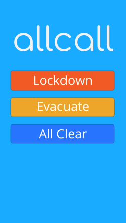
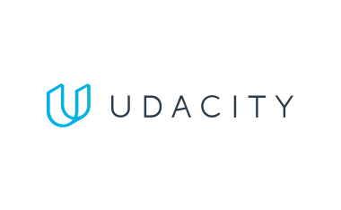

Allcall is an open-source project that leverages modern web technologies to provide a web-based interface for playback of audio alerts across multiple physical locations.
Tech: Laravel, Flask, Docker


Udacity Projects
A set of projects that I've created while completing the Udacity Full-Stack Nanodegree.
Tech: Python, Google Cloud, Vagrant
Portfolio Page
This portfolio page is open source. It's developed using modern web libraries and utilities.